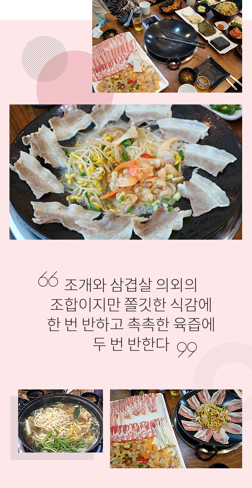

와 제 롤모델이 잡스에요!!! 아이폰 첫 출시되고 나서부터 계속 아이폰 쓰고 있는데 잡스가 너무 그리워요ㅠㅠ 지금은 돈만 벌려고 하는 것 같아서 디자인 발전도 없고ㅠㅠ와 제 롤모델이 잡스에요!!! 아이폰 첫 출시되고 나서부터 계속 아이폰 쓰고 있는데 잡스가 너무 그리워요ㅠㅠ 지금은 돈만 벌려고 하는 것 같아서 디자인 발전도 없고ㅠㅠ와 제 롤모델이 잡스에요!!! 아이폰 첫 출시되고 나서부터 계속 아이폰 쓰고 있는데 잡스가 너무 그리워요ㅠㅠ 지금은 돈만 벌려고 하는 것 같아서 디자인 발전도 없고ㅠㅠ와 제 롤모델이 잡스에요!!! 아이폰 첫 출시되고 나서부터 계속 아이폰 쓰고 있는데 잡스가 너무 그리워요ㅠㅠ 지금은 돈만 벌려고 하는 것 같아서 디자인 발전도 없고ㅠㅠ와 제 롤모델이 잡스에요!!! 아이폰 첫 출시되고 나서부터 계속 아이폰 쓰고 있는데 잡스가 너무 그리워요ㅠㅠ 지금은 돈만 벌려고 하는 것 같아서 디자인 발전도 없고ㅠㅠ
먹스타 맛집
여행객들이 부산에 가면 꼭 들러야 하는 맛집
바다와 육지의 만남
‘갈삼 구이 광안리점’
‘갈삼 구이 광안리점’
맛집 블로거, 먹스타그래머로 알려진 현상인들이 직접 맛집을 소개한다.
부산은 대한민국 대표 여행지 중 하나로 많은 여행객이 찾는 손꼽히는 관광지이다. 특히 부산 광안리는 볼거리, 먹을거리, 즐길 거리 등 각종 시설이 잘 갖춰져 있어 여행객들에게는 필수 코스라 해도 과언이 아니다. 여행객들로 붐비는 광안리에도 현지인들이 꼭 찾는 맛집이 있다고 하는데, 이번 호에서는 부산운영팀 박호정 사원이 인생맛집이라고 평하는 맛집을 소개한다.
글·사진
박호정 사원(부산운영팀)
마! 이게 갈삼 구이다!
갈삼 구이란 갈미 조개와 삼겹살이 어우러진 음식으로 부산 광안리에서만 맛볼 수 있는 신선한 음식이다. 여기서 갈미 조개는 개량 조개의 부산 사투리로 부산의 낙동강 하구에서 잡히는 특이한 조개로 조갯살이 마치 갈매기의 부리 같다 하여 붙여진 이름이다. 조개와 삼겹살 의외의 조합이지만 쫄깃한 식감에 한 번 반하고 촉촉한 육즙에 두 번 반한다.
갈삼 구이를 주문하면 그 자리에서 바로 조개껍데기를 제거해 제공해준다. 불판 중앙에 갈미 조개와 콩나물, 버섯 등을 올리고 가장자리로 삼겹살을 펼친 뒤 비법 육수를 부어 조개와 함께 구워 준다. 식당 직원들이 테이블에서 먹기 좋게 조리를 해주기 때문에 걱정할 필요가 없다. 조개는 오래 끓이면 질겨질 수 있기 때문에 살짝만 익히면 되고, 조개가 익으면 삼겹살 위에 올려서 개인의 취향에 맞게 먹으면 된다. 고추냉이와 마늘, 그리고 간장 베이스의 소스가 함께 제공되는데 소스만 찍어 먹어도 맛있지만 개인적으로 갈미 조개를 백김치, 삼겹살, 콩나물과 함께 쌈으로 먹는 것을 추천한다. 마지막으로 갈삼 구이를 먹고 조금 남겨 둔 삼겹살에 밥을 볶아 볶음밥으로 깔끔하게 마무리하면 더 좋다.

또 다른 별미 갈미 샤부샤부
4명 이상 방문한다면 갈미 샤부샤부도 함께 먹어 보길 바란다. 소주를 부르는 칼칼하고 시원한 국물의 갈미 샤부샤부 또한 이 집의 별미이다. 기존에 맛본 샤부샤부 보다 매콤하고 칼칼한 맛이 강해 조개의 비린 맛을 잡아 주어 국물이 아주 시원하다. 여기에 전복과 낙지를 추가한다면 더욱 국물의 깊은 맛을 느낄 수 있다. 갈미 샤부샤부를 다 먹고 난 후에 제공되는 칼국수도 상당히 훌륭하다. 어느 칼국수 맛집의 칼국수보다 훌륭한 국물 맛에 분명 감탄할 것이다.
광안리 바다풍경을 덤으로 즐길 수 있는 위치
부산에서만 맛볼 수 있는 갈삼 구이는 고기와 해산물을 함께 구워 먹는 특이한 조합으로 해산물을 잘 못 먹는 사람도 부담 없이 즐기기 좋은 음식이다. 다만 갈미 조개가 낙동강과 부산바다가 만나는 다대포에서만 나는 귀한 해산물이기 때문에 가격대가 좀 있는 편이다. 또 가게 내부가 다소 협소해 대기해야 하는 불편도 있지만, 창밖에 보이는 광안리 바다풍경을 덤으로 즐기면서 갈삼 구이를 먹노라면 ‘내가 부산에 왔구나’를 여실히 느낄 수 있을 것이다. 갈삼 구이 본점은 낙동강 하구인 명지에 위치해 있지만 지리상 찾기 어려워 광안리점을 추천한다. 마지막으로 식사를 마친 뒤 광안리 해수욕장을 따라 걷다 나오는 펍에 들러 맥주 한잔 기울인다면, 여행의 하루를 기분 좋게 마무리할 수 있을 것을 것이다.
Info
-

 부산 수영구 민락수변로 7, 4층
부산 수영구 민락수변로 7, 4층 -

 051-612-9266 (예약가능)
051-612-9266 (예약가능) -

 11:30 ~ 23:30
11:30 ~ 23:30 -

 갈삼 구이 ￦58,000(대), ￦48,000(중), ￦39,000(소) /
갈삼 구이 ￦58,000(대), ￦48,000(중), ￦39,000(소) /
갈미 샤부샤부 ￦65,000(대), ￦55,000(중), ￦45,000(소)
-
최고예요
322
-
좋아요
322
-
슬퍼요
322
-
그저 그래요
322
-
화나요
322